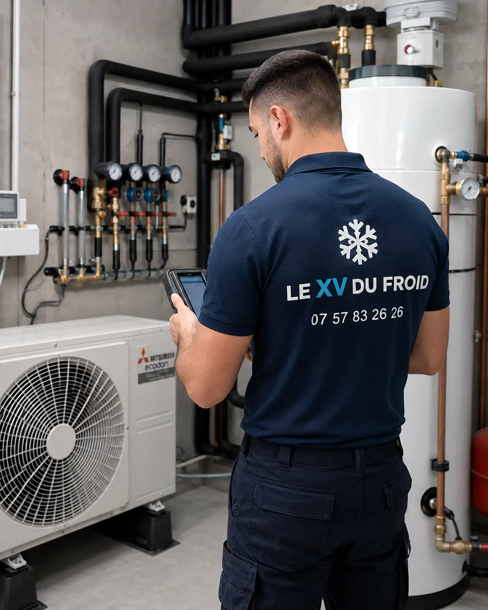

Triel-sur-Seine · 78510 · maison à étage
Installation climatisation Triel-sur-Seine : dans une maison à étage, tout se joue sur le trajet entre le groupe et les chambres.
Le séjour au rez-de-chaussée reste frais, les chambres sous le toit étouffent dès le mois de juin. Climatiser les deux niveaux demande un plan : combien d’unités, où va le groupe, et par où passent les tuyaux.
- Plan par niveau avant le choix du matériel
- Liaisons entre étage et groupe
- Visite et devis écrit

Étage
Le rez-de-chaussée et l’étage ne demandent pas la même chose.
En bas, on rafraîchit surtout le séjour dans la journée. En haut, on veut une chambre fraîche la nuit, quand la chaleur accumulée par le toit se libère. Les deux usages ne se règlent pas avec la même puissance ni le même appareil.
Une chambre est une petite pièce, mais la toiture chauffe fort. Nous regardons donc l’isolation des combles avant de calculer la puissance : un toit bien isolé permet un appareil plus petit.
Pour une installation climatisation Triel-sur-Seine en maison à étage, nous partons toujours d’un plan simple, niveau par niveau.
Les options
Trois façons d’équiper une maison à étage
Chacune a son avantage, selon le nombre de pièces et l’accès au groupe.
- Un mono-split par chambre : un groupe par pièce, simple, mais plusieurs groupes sur la façade.
- Un multi-split : un seul groupe alimente deux, trois ou quatre unités, avec des liaisons plus longues.
- Un séjour en bas et un bi-split en haut : deux systèmes indépendants, un par niveau.
- Un système gainable : le plus discret, mais il demande des combles ou un faux plafond accessible.
Les liaisons
Faire passer les tuyaux entre deux niveaux
Les liaisons entre unité et groupe passent par un mur, un plancher ou un conduit existant. Dans une maison à étage, on peut les cacher dans un faux plafond du couloir, dans un placard ou derrière un coffre peint.
Plus la liaison est longue, plus il faut tenir compte de la pente de l’évacuation d’eau et, parfois, ajouter une pompe de relevage si l’eau doit remonter.
Nous vérifions aussi la distance maximale que le fabricant autorise entre le groupe et la dernière unité.
Un groupe posé au pied de la façade et une chambre au dernier étage, cela fait une longue liaison. Mieux vaut le savoir avant de commander.
Le choix
Pose climatisation Triel-sur-Seine : mono, bi ou multi-split ?
Si une seule chambre pose problème, un mono-split suffit et reste le plus simple à installer. Si deux chambres et le séjour sont concernés, un multi-split évite de multiplier les groupes sur la façade, mais il met toutes les unités sous la dépendance d’un seul groupe.
Nous expliquons les deux options à la visite, avec leurs contraintes, et vous laissons choisir. Un devis climatisation Triel-sur-Seine tient compte des deux cas.

Le jour de la pose, niveau par niveau
Nous commençons par le groupe extérieur, puis les unités intérieures, puis les liaisons entre les deux. Le tirage au vide se fait une fois que tout est branché, et la mise en service vérifie chaque unité séparément.
Une pose de maison à étage prend en général une à deux journées selon le nombre d’unités et la longueur du trajet.
- Groupe fixé et mis de niveau
- Liaisons cachées ou gainées
- Essai de chaque unité
Questions
Climatiser une maison à étage à Triel-sur-Seine : vos questions
Faut-il un groupe par pièce ?
Non. Un multi-split alimente plusieurs unités avec un seul groupe, dans les limites indiquées par le fabricant.
Un étage sous toiture demande-t-il un appareil plus gros ?
Souvent plus puissant qu’une chambre classique, surtout si les combles sont peu isolés.
Où passent les tuyaux entre l’étage et le groupe ?
Par un mur extérieur, un faux plafond ou un placard. Nous cherchons le trajet le plus court et le plus discret.
L’eau de condensation de l’étage peut-elle s’évacuer ?
Oui, par gravité en général. Si la pente manque, une petite pompe de relevage fait le travail.
Combien de temps dure la pose ?
Une à deux journées pour une maison à étage, selon les unités.
Le devis est-il gratuit ?
Oui, après une visite des deux niveaux et de l’emplacement du groupe.
Dans votre ville
Les autres services à Triel-sur-Seine
Un besoin différent, une page différente : dépannage, entretien, installation ou urgence.
- Dépannage climatisation Triel-sur-Seine : la clim qui s’arrête dans une maison près de la Seine
- Entretien climatisation Triel-sur-Seine : propriétaire bailleur ou locataire, qui s’en occupe
- Urgence climatisation Triel-sur-Seine : la clim réversible ne chauffe plus par temps froid
- Climatisation dans les Yvelines (78) : installation, dépannage, entretien, urgence
Autour de chez vous
Installation de climatisation dans les villes voisines
Si vous êtes à la limite de deux communes, lisez aussi la page d’à côté.
- Installation climatisation Carrières-sous-Poissy : maison avec garage, liaisons longues et tableau électrique
- Installation climatisation Conflans-Sainte-Honorine : maison ancienne et passage des tuyaux
- Installation climatisation Andrésy : surélévation, véranda et pièce ajoutée
- Climatisation Maisons-Laffitte : climatiseur monobloc réversible
- Installation climatisation Poissy : multi-split pour les chambres
- Installation climatisation Sartrouville : installer une climatisation en maison
- Installation climatisation Verneuil-sur-Seine : extension ou pièce neuve, prévoir les réservations
- Climatisation Houilles : pose de clim réversible
- Installation climatisation Les Mureaux : choisir un appareil silencieux pour dormir
À côté
D’autres besoins dans les communes voisines
Chaque ville a ses pages.
Nos services
Aller plus loin sur la climatisation
Les pages du site qui complètent celle-ci : services, guides pratiques et devis.
- Dépannage climatisation en Île-de-France
- Installation de climatisation : split, gainable, monobloc
- Entretien de climatisation et de clim réversible
- Demander un devis climatisation gratuit
- Toutes nos zones d’intervention
- L’entretien de la climatisation est-il obligatoire ?
- Quelle puissance de climatisation choisir ?
Où on intervient
Triel-sur-Seine et communes voisines
Le centre, les quartiers de maisons et les lotissements, ainsi que Vernouillet, Verneuil-sur-Seine, Carrières-sous-Poissy, Chanteloup-les-Vignes et Médan.
Demander une visite à Triel-sur-SeineÀ lire aussi
Autour de Triel-sur-Seine
Pages voisines : installation Poissy, installation Andrésy.
Transparence
Un devis clair avant toute intervention.
Vous savez ce qui est prévu, pourquoi c’est nécessaire et à quel tarif avant que le technicien commence. Puis contrôles et essais avant son départ.